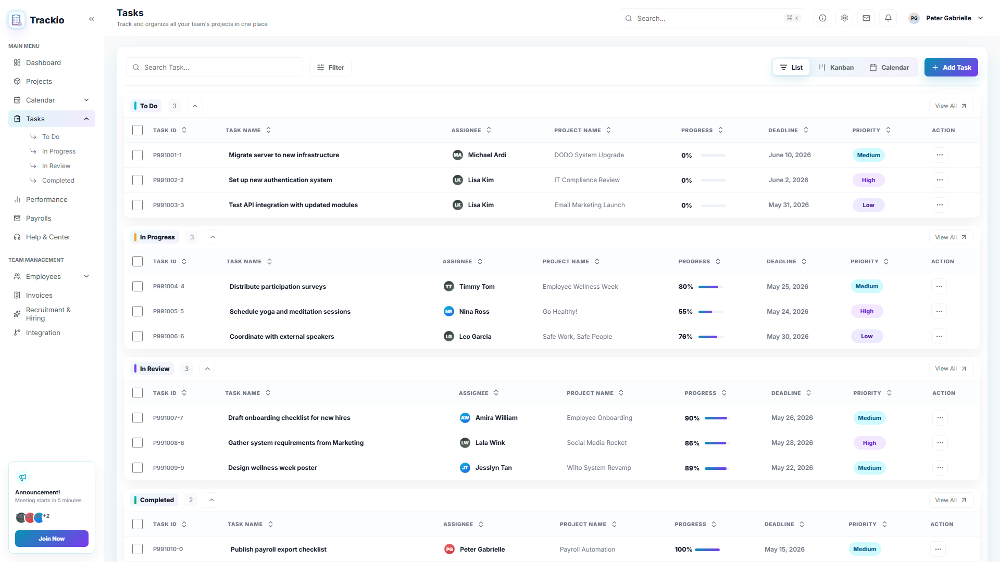
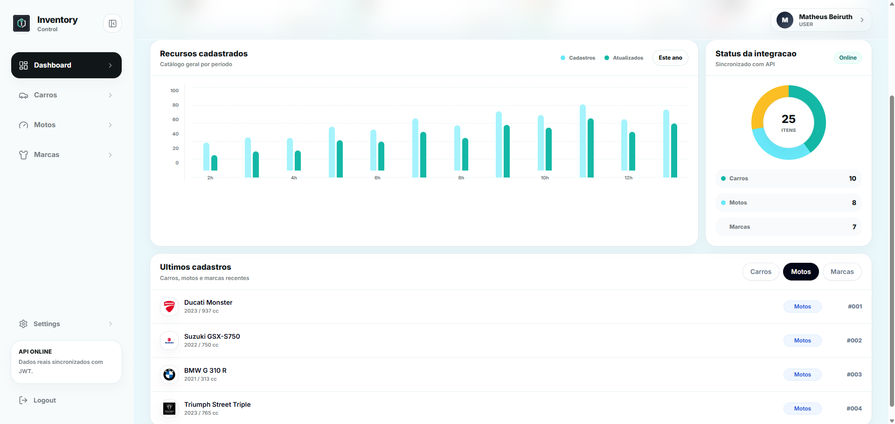

Olá, eu sou Matheus Beiruth
Desenvolvedor backend/full stack em formação.
Focado em APIs, dashboards e produtos digitais. Estudante de Engenharia de Software no 7º período, buscando estágio ou vaga júnior.

Tecnologias principais
- JavaScript
- Java
- Python
- React
- Django
- MySQL
Portfólio
Projetos recentes
Projetos selecionados entre interfaces, produtos digitais e sistemas web.
TaskManagerAPI

Backend · API
TaskManagerAPI
API REST de gestão de tarefas com quadro Kanban e dashboard.
Gestão Ativa

Gestão operacional
Gestão Ativa
Dashboard para acompanhar dados e decisões operacionais.
express-jwt-docker-api

Full stack · API
express-jwt-docker-api
Gestão de estoque com autenticação JWT e ambiente containerizado.
Orbia

Produto digital
Orbia
Site institucional com estrutura clara e visual premium.
Especialidades
Serviços
Interfaces, sistemas e APIs orientados ao que o projeto precisa comunicar.
Desenvolvimento web
Interfaces responsivas, landing pages e experiências digitais claras e performáticas.
- Sites institucionais e landing pages
- Aplicações web modernas (SPA)
- Performance, SEO e acessibilidade
APIs e backend
APIs, dados e regras de negócio para sistemas mais consistentes, seguros e escaláveis.
- APIs RESTful e integrações
- Regras de negócio e validações
- Autenticação, segurança e performance
Dashboards e sistemas
Produtos digitais com fluxos objetivos para acompanhar dados, processos e decisões.
- Dashboards analíticos e operacionais
- Sistemas internos e ferramentas
- Visualização de dados e relatórios
Como trabalho
Processo
Uma organização simples para transformar uma ideia em uma experiência digital.
Entender o contexto
Organizo necessidades, escopo e prioridades do projeto.
Desenvolver a solução
Estruturo interfaces e funcionalidades com atenção aos detalhes.
Revisar e evoluir
Refino a experiência para manter o resultado claro e consistente.
Vamos conversar sobre uma oportunidade ou projeto?
Estou aberto para novos desafios e colaborações.
Perfil
Sobre mim
Conheça um pouco mais sobre minha formação, foco e trajetória.
Apresentação
Construo com atenção à clareza técnica e à experiência.
Sou estudante de Engenharia de Software no 7º período e desenvolvedor backend/full stack em formação. Busco oportunidades para atuar com APIs, dashboards, sistemas web e interfaces modernas.
Meu stack
Ferramentas em uso- JavaScript
- Java
- Python
- React
- Django
- MySQL
- Docker
- Git
Experiência e formação
Trajetória- Projetos independentes de softwareAPIs backend, interfaces web e dashboards
- Onshop.dmo · FreelancerOperação com clientes, vendas e estoque
- Prefeitura de Maricá · Freelancer temporárioApoio em eventos e supervisão operacional
- Engenharia de SoftwareUniversidade de Vassouras
Formação complementar
Certificações
Registros de cursos concluídos em desenvolvimento, dados e fundamentos de programação.

Bolsa Futuro Digital · 2025
Back-End Python - Django
Treinamento concluído com carga horária de 200 horas.
Ver certificado
Hubla · 2025
Estrutura de Dados e Algoritmos
Curso livre com carga horária total de 8 horas.
Ver certificado
Dúvidas comuns
Perguntas frequentes
Informações diretas sobre o portfólio, a formação e os canais de contato.
O portfólio reúne interfaces, landing pages, dashboards, produtos digitais e projetos com APIs e sistemas web.
JavaScript, Java, Python, React, Django, MySQL, Docker e Git fazem parte das tecnologias apresentadas no portfólio.
Sim. Atualmente busco oportunidades de estágio ou vaga júnior em desenvolvimento backend/full stack.
Os projetos selecionados estão nesta página e direcionam para os respectivos repositórios no GitHub.
Você pode iniciar uma conversa pelo WhatsApp ou enviar um e-mail para matheusbeiruth10@gmail.com.
Vamos conversar
Sua próxima oportunidade merece uma experiência bem construída.
Estou disponível para conversar sobre estágio ou vaga júnior em desenvolvimento backend/full stack.